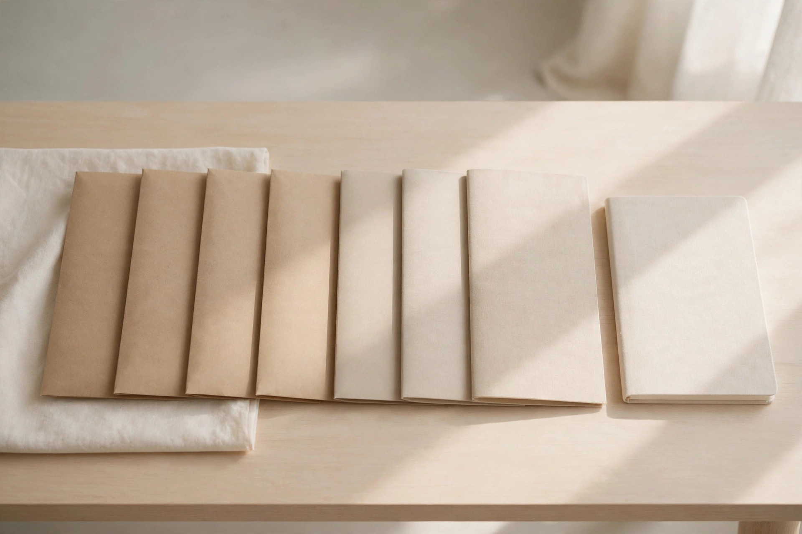

The two calendars
Most December tax panic comes from treating every account like it shares the same deadline. It doesn't. The TFSA, the FHSA, and charitable donations run on a hard December 31 calendar. The RRSP gets a 60-day grace period: contributions made in the first 60 days of 2027, up to and including March 1, 2027, can still be deducted on the 2026 return. The single biggest year-end mistake is rushing an RRSP decision in December when you could make it in February with your actual income known — and forgetting a TFSA move that genuinely expires at midnight.
The deadline table: which date bites which account
| Account | Deadline for the 2026 tax year | Unused room carries forward? |
|---|---|---|
| FHSA | December 31, 2026 | Yes |
| TFSA (2026 contributions) | December 31, 2026 | Yes |
| Charitable donations | December 31, 2026 | Credits: 5 years |
| RRSP (2026 deduction) | March 1, 2027 | Yes |
The FHSA deadline catches people out precisely because it looks like an RRSP: it isn't. FHSA contributions of up to $8,000 per year ($40,000 lifetime maximum, or up to $16,000 in a year using unused room from prior years) must land by December 31, 2026 to reduce 2026 taxable income. The RRSP, at 18% of annual income up to a $33,810 maximum, gets until March 1, 2027. Put the FHSA on the December list and the RRSP on the January-February list, and the confusion disappears.
What must happen before December 31
- FHSA contributions. If you're saving for a first home, this is a real December 31 deadline — unlike the RRSP, there is no 60-day extension. Unused room carries forward, but a contribution you meant to make for 2026 and miss is simply a 2026 deduction gone.
- TFSA contributions for 2026 room. The 2026 room is $7,000 (lifetime $109,000 for those eligible since 2009). Contributions count for the current tax year only if made by December 31. The room itself carries forward indefinitely, so this is about tidiness, not loss — but if your plan was to use 2026 room, do it now.
- TFSA withdrawals you have planned. This is the quiet one. Any amount you withdraw from a TFSA is added back to your contribution room — but not until January 1 of the following year. Withdraw on December 31, 2026 and the room returns on January 1, 2027. Withdraw on January 1, 2027 instead, and the same room does not come back until January 1, 2028. If a large withdrawal is on your radar (a down payment, a business investment, an emergency buffer), pulling it in December buys you a full extra year of contribution room.
- Charitable donations. Donations must be made by December 31, 2026 to be claimed on the 2026 return. See Guide 8 for the channel-by-channel timing (online, mail, and securities transfers each have a different finish line).
What can wait for the 60-day window
RRSP contributions for 2026 can wait until March 1, 2027 — and waiting is often smarter. Unlike TFSA contributions, RRSP contributions are tax-deductible, which makes the size of the contribution a genuine tax decision, not just a savings habit. Making it in January or February, once you know your actual 2026 income, beats guessing in December. Two cautions: first, your exact deduction limit (18% of prior-year earned income, minus any pension adjustment, plus unused room) is printed on your CRA notice of assessment — check it before you contribute rather than estimating. Second, the TFSA over-contribution penalty is 1% per month on the excess, so if you're contributing to both accounts, keep your own records, especially in a year you also withdrew from the TFSA.

The self-employed sequencing advantage
If you're self-employed, the 60-day window is your friend, not your enemy. Your 2026 income is genuinely uncertain until the year closes, and an RRSP contribution's value depends on your marginal rate. The sequence that respects that: settle your December-31 items (FHSA, TFSA moves, donations) in December; let the RRSP decision wait until you can see the year's real income. And remember the asymmetry between the accounts: TFSA withdrawals are tax-free with no penalties and the room comes back; RRSP withdrawals are taxable as income and the contribution room is gone forever. Your TFSA — or a separate savings account — should be your emergency buffer, never your RRSP.
The sequencing checklist: work it in this order
- Check your room. Log into CRA My Account, pull your most recent notice of assessment, or call the CRA at 1-800-959-8281. Know your exact TFSA room and RRSP deduction limit before moving a dollar.
- Make any planned TFSA withdrawals before December 31. This is the one move whose value changes with the calendar date.
- Top up TFSA and FHSA contributions to your 2026 plan by December 31. FHSA first — it has no grace period.
- Make charitable donations by their channel deadline. Securities transfers need the most lead time.
- In January or February, size your RRSP contribution. Now you know your 2026 income, your notice of assessment figure, and you have until March 1, 2027.
Why this order: steps 1–4 have hard December 31 deadlines or timing value that expires at year-end; step 5's deadline is March 1, 2027, and its value improves once 2026 income is final. Working the list in this order means you never leave a deduction on the table for want of a calendar.
What success looks like
By January 2, 2027, you can state four numbers from memory: your TFSA room used, your FHSA contribution for 2026, the donation total you're claiming, and the RRSP contribution you're planning before March 1. If those four are clean, the December rush is over — everything else is January paperwork.